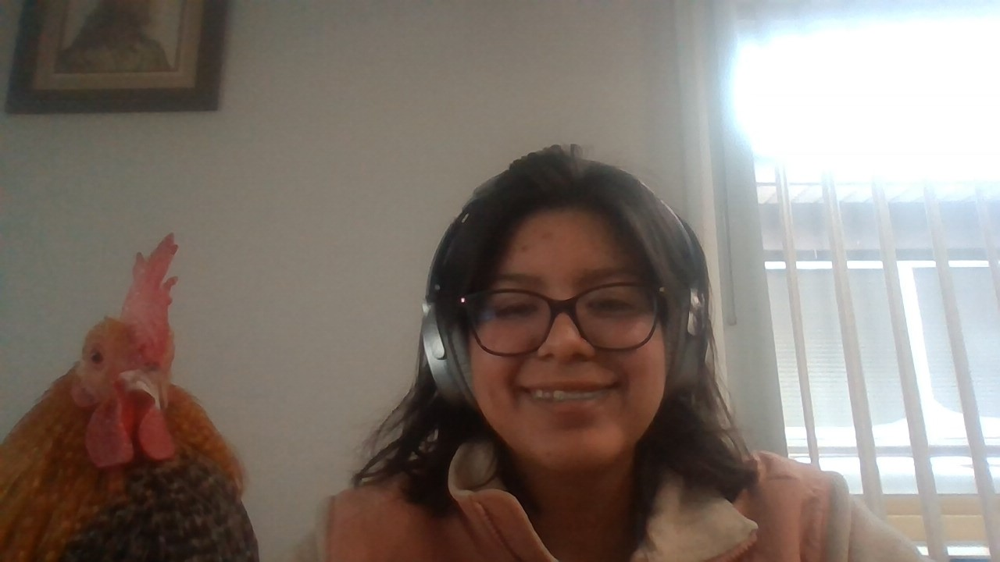
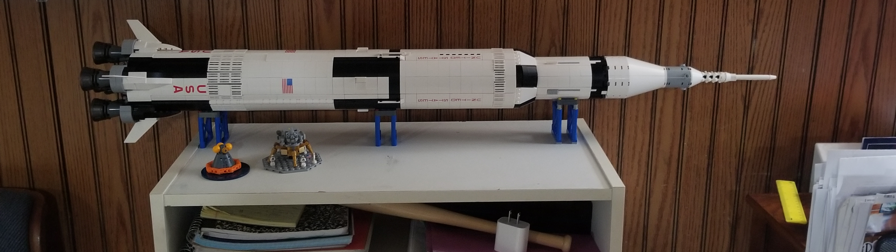
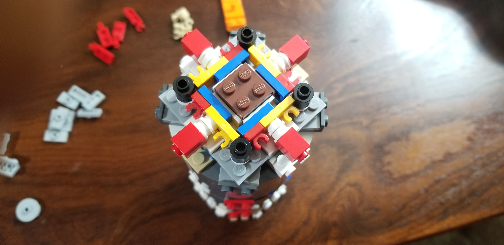

Hey I'm Daniela Munoz, a first-year ITM major with a growing interest in cybersecurity (blue team). I'm from the East Side, Chicago, IL if you don't know where that is I don't blame you. The three white stripes on the city flag account for all 3 major sides (North, West, South) but always falls short to mention the East side. Outside of school, I enjoy biking if weather permits whether its along the lake or to one of Indiana's well-kept parks. Outside of biking I enjoy completing lego sets, so far I only have an old train set, Aston Martin 007, and the Saturn V which has been my favourite build so far as the interior build was clean and so symmetrical.
Paco getting his education
Two fools looking at the camera
Her final resting place.
That symmetry tho 0-0